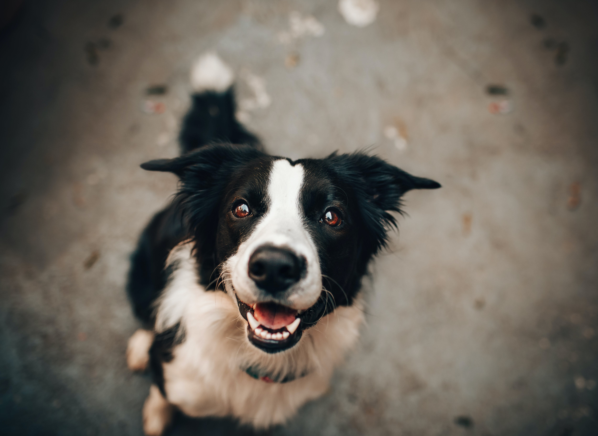
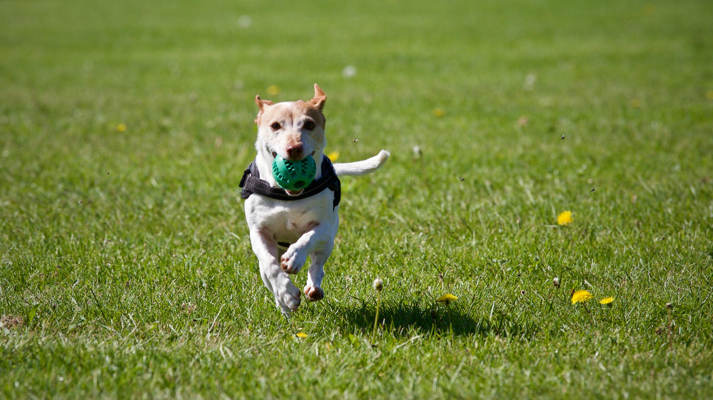
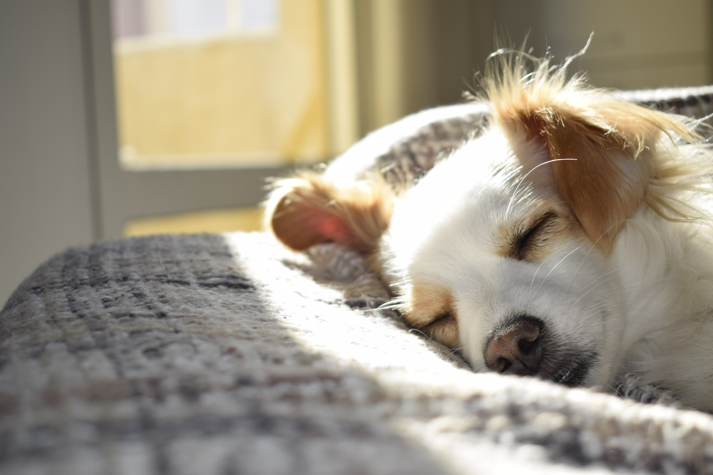
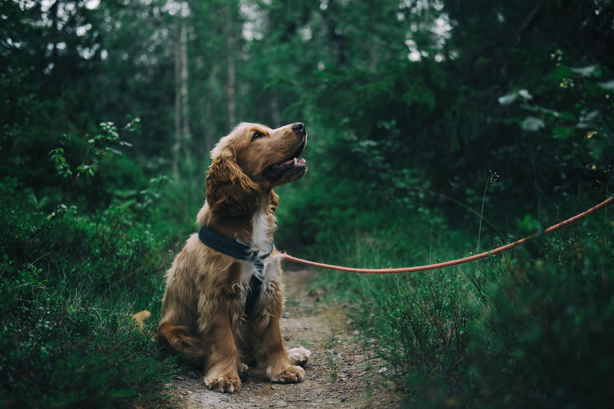
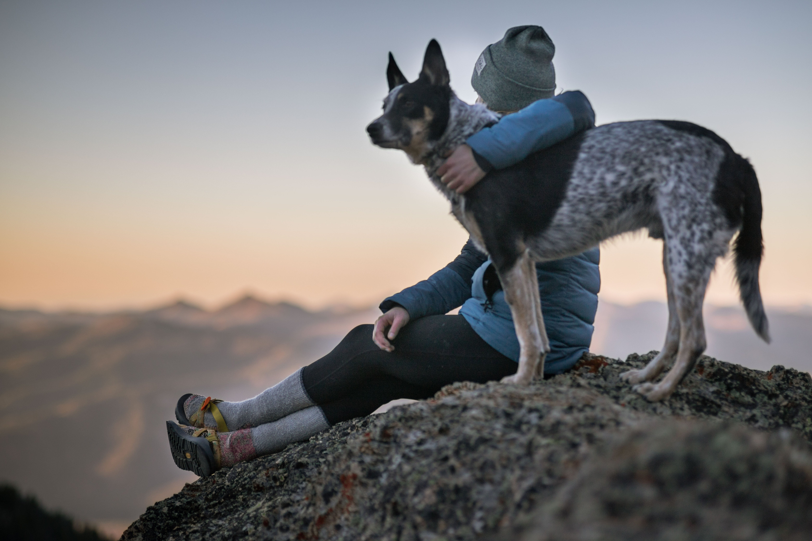
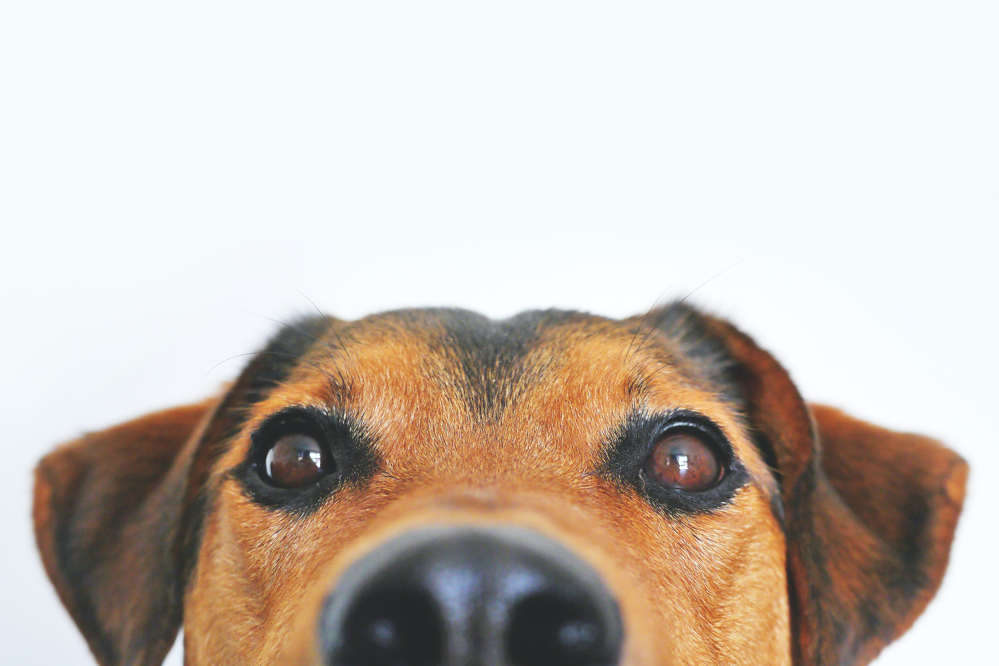

Dogs come into our lives to teach us about love and loyalty. They depart to teach us about loss.
A new dog never replaces an old dog; it merely expands the heart.
-Erica Jong

Old dogs, like old shoes, are comfortable. They might be a bit out of shape and a little worn
around the edges, but they fit well.
-Bonnie Wilcox
Exercise is important no matter the age.

No one appreciates the very special genius of your conversation as much as the dog does.
-Christopher Morley
Make a schedule, plan those road trips, live the dream.

Dogs have a way of finding the people who needs them, and filling an emptiness we didn't ever know we had.
-Thom Jones
Don't forget to vaccinate your dog and yourself, stay healthy.

No matter how little money and how few poessessions you own, having a dog makes you feel rich
-Louis Sabin
Make a to-do list, it can me simple things like going for a walk in a new park!

Such a short little lives our pets have to spend with us, and they spend most of it watching for us to come home eaaach day
-John Grogan
Value the time and keep everything in one place, so you can spend even more time with your dog.